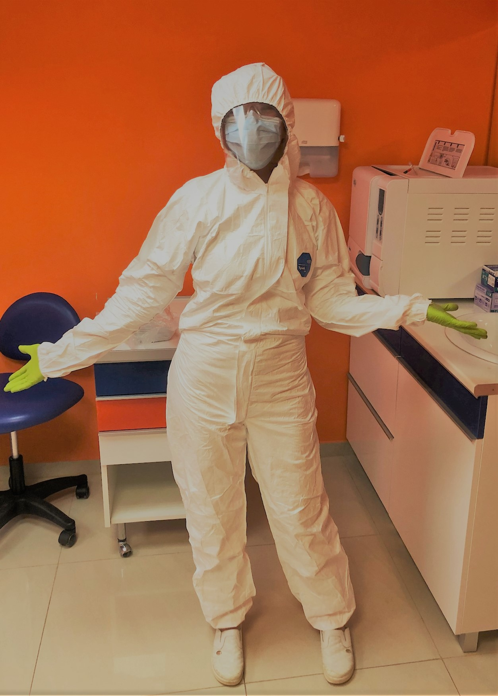

A rendelő úrjanyitása: 2020. május 4.
Sok szeretettel köszöntök mindenkit itt, az új információs oldalamon!
Rég találkoztunk, elmaradtak az ellenőrzések, lelassultak a kezelések. Május 4-től a magán fogászati ellátók lehetőséget kaptak munkájuk folytatására. Ez sajnos nem jelenti azt, hogy a koronavírus-járványnak vége, folytathatjuk ott és úgy, ahogy abbahagytuk. Ezen a felületen szeretném előrevetíteni, hogy jelen esetben, milyen feltételek és korlátozások mellett végezhetem a munkámat.
Telefonos egyeztetés
Ez eddig is jól működött a rendelőnkben. Annyi változás lesz, hogy első alkalommal én vagy az asszisztensem fog felkeresni Titeket. Átbeszéljük, milyen előzményekkel vágunk neki a folytatásnak. Szeretném tudni, hogy jó egészségi állapotban vagytok-e! Volt-e kapcsolatotok COVID-19-es beteggel, vagy személyesen érintettetek vagytok, voltatok-e a betegséggel kapcsolatban.
Beszéljük át, hogy rendben van-e a fogszabályozó készülék. Engedtek-e el alkatrészek, felsebezte-e a szájnyálkahártyát, illetve, ha bármi más probléma adódott, kérlek Titeket telefonon mondjátok el, hogy elő tudjunk készülni a kezelésre.
Mivel továbbra is fennáll a vírushelyzet, kérek mindenkit, gondolja át, mindenképpen szükséges-e ellenőrzésre jönnie. Mivel a fogászati ellátás az egyik legveszélyesebb ágazat a vírus terjedése szempontjából, mi mindent megteszünk, hogy megvédjünk Titeket a cseppfertőzéstől. Kérünk Benneteket, hogy segítsétek a munkánkat azzal, hogy az alábbiakban leírt szabályokat Ti is betartjátok!
Érkezés a rendelőbe
Kérlek Titeket, hogy pontosan a megbeszélt időpontra, maszkban érkezzetek. Ha korábban érkeznétek, az autótokban vagy az utcán várakozzatok.
Amíg nem szólítunk Titeket, a bejárati ajtón kívül várakozzatok.
Szeretném kérni, hogy kísérő nélkül gyertek. A gyerekeket csak egy felnőtt kísérje. Ha telefonon meg tudjuk előre beszélni a kéréseiteket, nem feltétlenül kell együtt bejönnötök a rendelőbe.
A várót üresen szeretnénk tartani, a mosdó is le lesz zárva.
A váróban más páciens a veletek megbeszélt időpontban nem fog tartózkodni. Személyes holmitokat nyugodtan letehetitek ott, a rendelőbe kérlek ne hozzátok be.
A váróban kötelező hőmérés és kézfertőtlenítés vár rátok.
Mivel a mosdó le lesz zárva, kérlek Titeket, otthon nagyon alaposan mossatok fogat, nagy figyelmet fordítva a fogszabályozó alkatrészekre is! Kérem a szülőket ennek ellenőrzésére. A rendelőben nem lesz lehetőségem polírozásra.
Kérem a kivehető készülékdobozokat és a készülékeket is fertőtlenítve hozzátok ellenőrzésre!
A rendelőben
A szakmai ajánlásokat követve fogom elvégezni a kezeléseket.
A rendelőben légtisztító berendezés működik.
Én és az asszisztensem kötelezően minden védőeszközt viselni fogunk: védőoverál, FFP2 maszk, védőszemüveg, arcpajzs, kesztyű.
A fogorvosi székbe beülve távolíthatjátok el a maszkot. Ezután szájfertőtlenítésre kerül sor. A fertőtlenítő oldat szájban való átmozgatása után az asszisztens kiszívja a folyadékot, öblítés nincs.
Mivel a vírus cseppfertőzéssel terjed, aeroszolképződéssel járó forgóeszközöket (fúrót), spray-t nem használhatok, ultrahangos fogkőeltávolítást nem végezhetek.
Amennyiben olyan beavatkozás válik szükségessé, amihez ezek használatára feltétlenül szükség van (pl. fogszabályozó készülék levétele, retainer felhelyezése, javítása), a szakmai kollégium kötelezi a pácienst PCR vizsgálat elvégeztetésére, ami kimutatja, hogy hordozza-e a vírust. Negatív eredmény esetén lehetőség szerint azonnal el kell végezni a tervezett beavatkozást. A vizsgálat költsége a pácienst terheli.
Az ellenőrzési díjak a következőként alakulnak:
kivehető készülék ellenőrzése: 3000 Ft
multiband készülék ellenőrzése 1 állcsonton: 5000 Ft
multiband készülék ellenőrzése 2 állcsonton: 8000 Ft
Mivel bankkártyás fizetésre egyenlőre nincs lehetőség, sokat segítenétek a pontos összeg előkészítésével. Számlaigényeteket már telefonon előre jelezzétek.
Csak meg ne ijedjetek Tőlünk!

Az új munkaruhánk nem szép és nem is kényelmes.
Küldök egy mosolyt, mert élőben sajnos nem fogjátok látni.
Várunk Titeket szeretettel!
Dr. Papp Viktória
Kiss Viktória